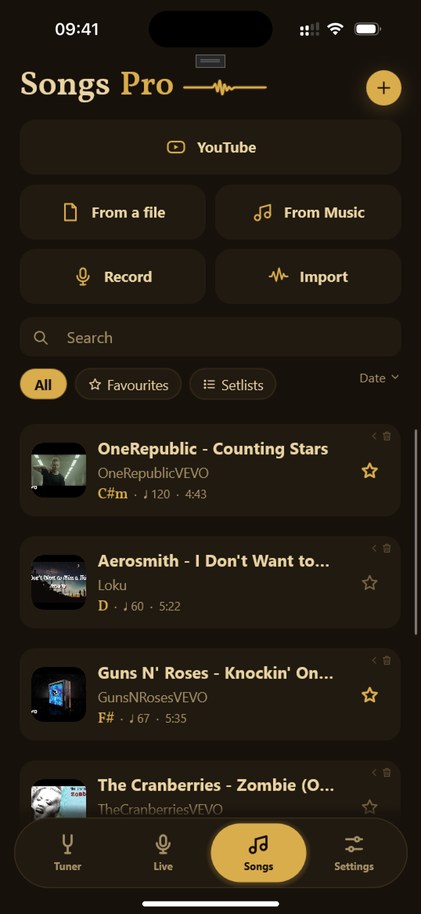
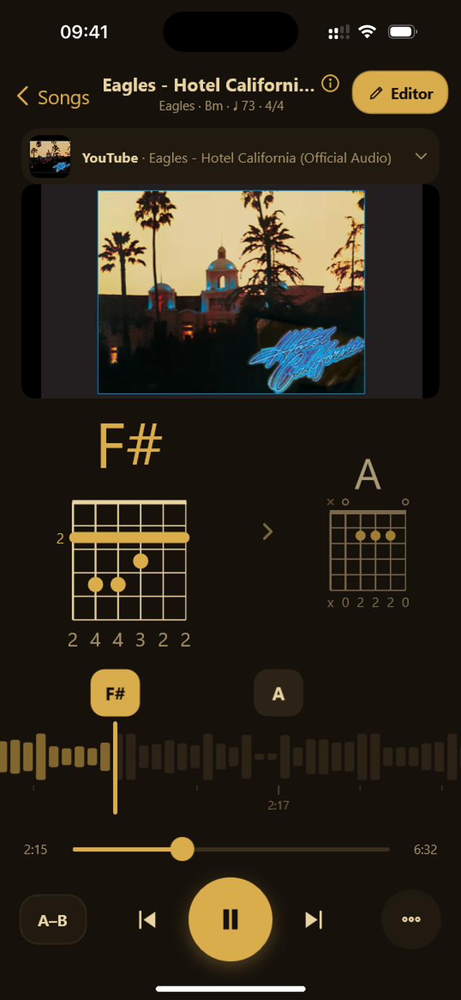
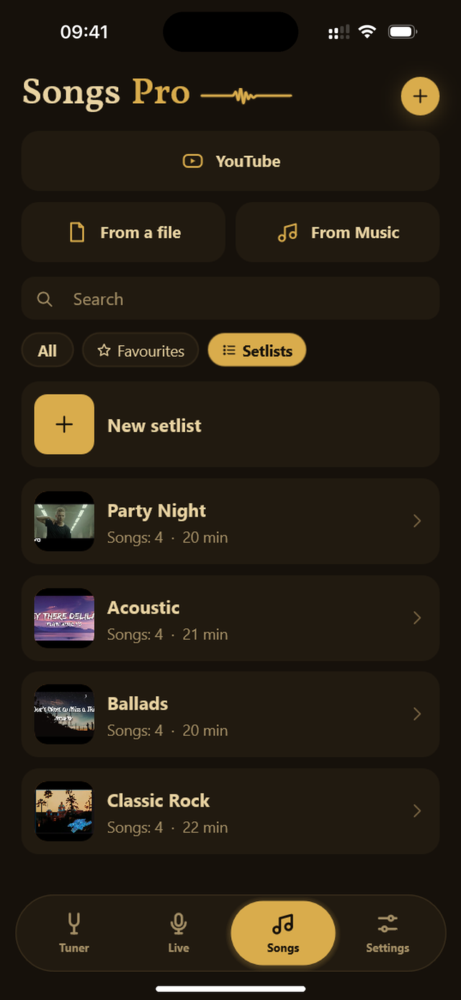
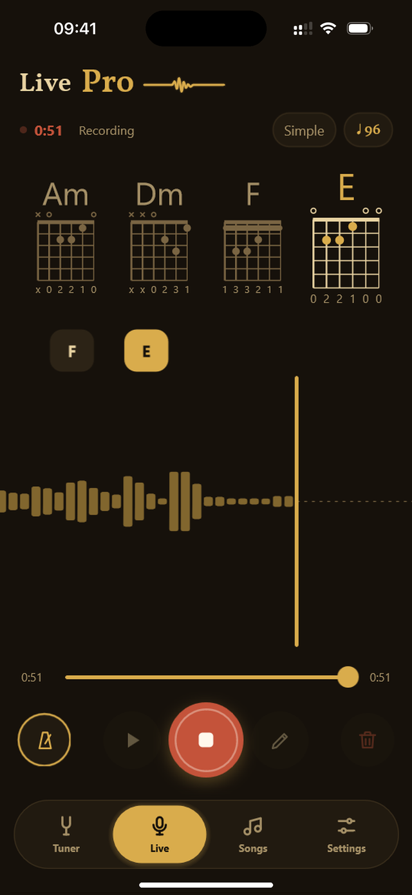
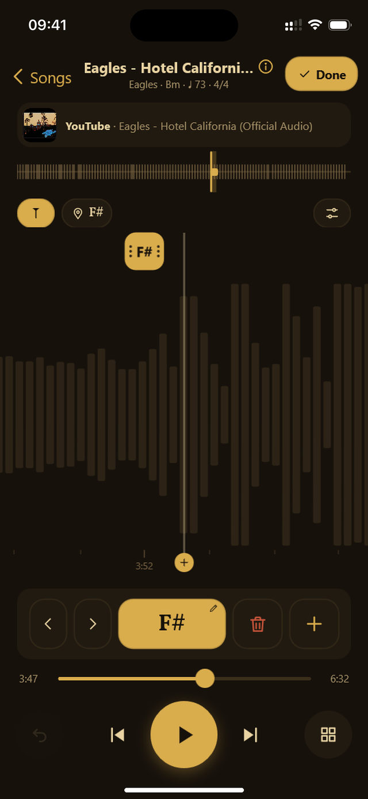
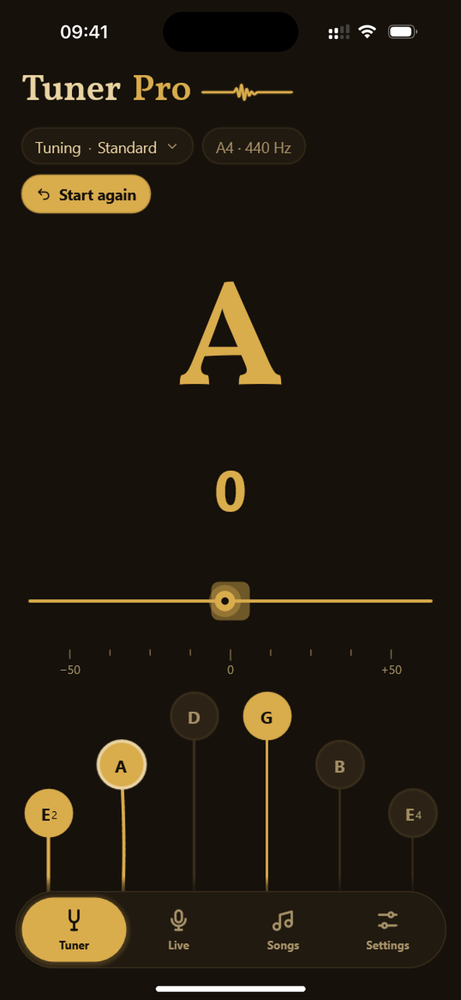
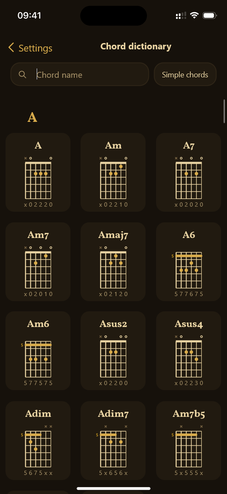

Add a song
A song from YouTube, a file from storage or iCloud, a song from your iPhone music library. Or just play it into the microphone.
For guitarists · iPhone
Pick a song (YouTube, a file, music library or a recording) and get its chords on the audio track at once, diagrams included.
How it works
No account, nothing to set up. Add a song and play.
A song from YouTube, a file from storage or iCloud, a song from your iPhone music library. Or just play it into the microphone.
Strunika finds the chords, the beats, the tempo and the key. The song stays on the phone.
The chords ride along the audio track with the song, and the screen shows their diagrams.
Songs
YouTube, a file from storage, the iPhone music library or a recording from the mic. Pick a song and get its chords in seconds.


Song page
The song rides past the playhead and the chords sit where they sound. Tap a chord and the song jumps to it.
Setlists
Gather songs for a gig or a rehearsal in the order you will play them. One song can sit in several setlists.


Live
Turn on the microphone and play. The chords land on the audio track by themselves as you go.
Chord editor
Drag a chord with your finger, replace it, add a new one or delete it right on the track.


Tuner
Pluck a string and Strunika picks it by itself. The string on screen sags while it is out of tune and flashes gold when it is right.
Chord dictionary
Open shapes and the five movable CAGED shapes for every chord. Tap to hear it.

Features
Tuner, Live and Songs. Nothing in the way, everything at hand.
YouTube, file, iPhone music library or recording. Chords, key, tempo and time signature for each one.
You play, Strunika names the chords and records the take. One tap and it is a song in your library.
Chromatic, picks the string by itself. Standard, Drop D, DADGAD, open tunings, ukulele, bass.
Open shapes and the five movable CAGED shapes for every chord. Left-handed players get a mirror.
One switch and the complex chords become major and minor. Play from the first minute.
A click at the song's tempo, with a count-in before you start.
Fit the key to your voice, put on a capo. The diagrams follow by themselves.
Slow the song down without changing the pitch and repeat the hard passage until it sits in your fingers.
Move, replace, add and delete chords right on the audio track.
PDF, Excel, ChordPro or a Strunika file to share a song with a friend, audio included.
Songs in your own order for a gig or a rehearsal.
168 chords. Hear each one and see it in every position on the neck.
Strunika Pro
The tuner, Live and 20 song analyses are free for good. Pro lifts the limit and adds the tools for working songs out.
$0, forever
The subscription renews automatically and can be cancelled any time.
Next
Loop your guitar parts and play live over your own loops.
Drop the drums, keep the bass, or mute your own instrument and play its part yourself.
Remove the vocal and sing or play along with the original.
The bass part as notes and tabs beside the chords.
Questions and answers
How Strunika finds chords, what is free, how YouTube works and why we collect nothing.
Strunika is an iPhone app for guitarists that recognizes the chords of a song from a YouTube video, an audio file, the iPhone music library or your own recording, scrolls them past a playhead while you play, hears your guitar live and includes a tuner. The name comes from the Ukrainian word "struna", a string.
A neural network trained on thousands of songs runs on the iPhone itself: it slices the sound into frequency frames, finds the beats and the tempo, then names the chord at every moment out of 168 possible ones. The result is aligned to the bar grid so chord changes land on beats, the way they are played.
Not for files and recordings: the analysis runs entirely on device. Internet is needed only for YouTube songs, because the video plays through the official YouTube player.
iPhone with iOS 15 or later. There is no Android version yet.
English and Ukrainian. The language is chosen on the first launch and can be changed in Settings at any time.
Yes. Strunika has a dark and a light theme in warm wood and brass tones, and follows the system setting by default.
The song, its chords and your edits live on one audio track: you can scrub it, loop a passage and move chords on it like in an editor. A Live take becomes a song with chords in the library at once. The free plan never expires. There are no accounts and no analytics. The interface comes in English and Ukrainian.
On the Songs tab tap YouTube: the built-in YouTube opens, find the video there and tap "Add". Or open Strunika with the link already copied, and the YouTube button offers to add the song from the clipboard. While you play, the video runs in the official YouTube player and the chords scroll on the conveyor beneath it.
Tap "File" on the Songs tab and pick an mp3, m4a or wav from Files or iCloud Drive. You can also open a file in Strunika through "Share" from another app.
Yes. The "From Music" button on the Songs tab opens the system song picker for your iPhone library: songs bought in iTunes or synced from a computer work. Apple Music subscription songs are protected and cannot be read, so the picker leaves them out.
Yes. The "Record" button captures sound through the iPhone microphone, and once you stop, Strunika analyses the recording and adds the song to the library with chords. It is a handy way to find chords for a song someone plays next to you, or for your own melody.
For most popular songs with a clear harmonic backing the chords match the studio ones more than 80–90 % of the time; best on acoustic music and pop/rock recordings, worse on very dense mixes and jazz harmony. With "Simple chords" on, everything reduces to major and minor and almost always sounds right for playing along. Where the model is wrong, there is the chord editor.
15 minutes. Longer files and videos are not analysed, and no free analysis is spent on them.
Yes: the key, the tempo in BPM and the time signature appear in the row above the conveyor and on the song's card in the library. Beats are marked on the conveyor, and the metronome can click along at the song's tempo.
A mode in which every chord is reduced to a major or minor triad: Am7 becomes Am, Gsus4 becomes G, Bdim becomes Bm. It is on by default so a song can be played right away. The full vocabulary of 168 chords comes with Pro.
Yes, with Pro. Transposing shifts every chord by the chosen number of semitones, and the capo shows the shapes to hold relative to it; the diagrams update by themselves.
Yes, with Pro: speed from 0.5× to 1.25× without changing the pitch, and an A–B loop that repeats the chosen passage. The loop ends snap to chords so you never have to catch them by hand.
Open the chord editor. The track works like a DAW: a tap selects a chord, a drag moves the moment it begins, and the panel replaces, deletes or adds a chord; the step is a sixteenth note and there is undo. The editor is part of Pro.
A fretboard diagram with fret numbers always sits beside the chord name. Tapping it opens every position of that chord: the open shapes and the five movable CAGED shapes; the chosen position is remembered for that song. Left-handed players get mirrored diagrams.
It is the ribbon at the bottom of the song screen: the waveform, the beats, and the name of each chord at the moment it changes. The ribbon rides past the playhead with the song; tapping a chord seeks to it, dragging scrubs the song silently. You always see what sounds now and what comes in a few seconds.
Yes. The Live tab listens to the microphone and writes the chords you play onto the track as you go: a quick guess first, then the confirmed chord a moment later. It works with acoustic and electric guitars through the iPhone microphone.
To find the chords of your own idea, to check yourself while working out a song, or simply to record a rehearsal take. The take is saved to the library as a ready song with chords, with no analysis and no free analysis spent.
Yes, on the Live tab and on the song page. On Live it counts 3 · 2 · 1 · 0 before recording and clicks at a set tempo from 40 to 240 BPM; on the song page it clicks at the song's tempo. The clicks do not disturb the recognition, but from the iPhone speaker they end up in the recording, so it is best to wear headphones when playing to the metronome.
Up to 15 minutes. You can continue recording from the end or record over from any point.
Yes, a chromatic tuner on the first tab. It detects which string you plucked by itself and shows the note and the offset; the string on screen sags while it is out of tune and snaps straight with a gold flash when it is in. Tuned strings are marked, and when all six are done the pegs bounce in a wave.
Standard for free; with Pro also Drop D, half step down, whole step down, DADGAD, Open G, Open D, ukulele GCEA and bass EADG. The A4 reference can be shifted within 430–450 Hz.
So the number is easy to read: 10 points is one fret, that is 100 cents. "+3" means "a little sharp, under a third of a fret". No verdict words and no hints on the screen.
Yes: there are ukulele GCEA and bass EADG tunings, and the chromatic mode suits any stringed instrument.
Yes, with Pro. The PDF comes in two layouts: "Bars" (four bars to a row, the chord where it begins) and "Conveyor" (the waveform with beats and chords). Both end with the diagrams of every chord in the song. Excel and ChordPro export are there too.
A complete copy of a song: chords, beats, cover and audio (for YouTube only the link). Send it by AirDrop or mail, and on another iPhone with Strunika it opens with one tap, ready to play. Import is part of Pro.
Yes, with Pro. A setlist is songs in your own order; a song can be in several setlists. Reorder by dragging the grip; removing a song from a setlist never touches the song itself.
The library lives in the app's storage and is part of the iPhone backup (iCloud or computer). To move single songs there is the .strunika file.
The tuner with standard tuning, the Live tab with chord recognition, 20 song analyses for the lifetime of the install, simple chords, the metronome, diagrams, the chord dictionary. Analysed songs stay open forever.
Unlimited analyses, the chord editor, export to PDF, Excel, ChordPro and .strunika with import, alternative tunings, the full vocabulary of 168 chords, transpose and capo, playback speed, the A–B loop, setlists and the A4 reference setting.
$3 a month or $25 a year, so the yearly subscription is 30% cheaper. The exact price in your currency is shown by the App Store inside the app. There is no free trial, but the free version has no time limit.
Yes, through App Store offer codes: the app has a "Promo code" button. Purchases are restored on a new device with "Restore purchases".
Nothing disappears: every song, chord and setlist stays. Only the Pro tools close, and the Pro settings go back to their defaults.
No. The app has no accounts, no analytics, no advertising and no third-party data-collection SDKs. Audio and analysis results are stored only on your iPhone. The app goes online only for YouTube and for a small service-settings file, with no identifiers attached. Crash reports are collected by Apple itself, and you control them in iOS settings.
Only while the Tuner or Live tab is on screen, or while you record a song. As soon as you switch to another tab or send the app to the background, the microphone turns off.